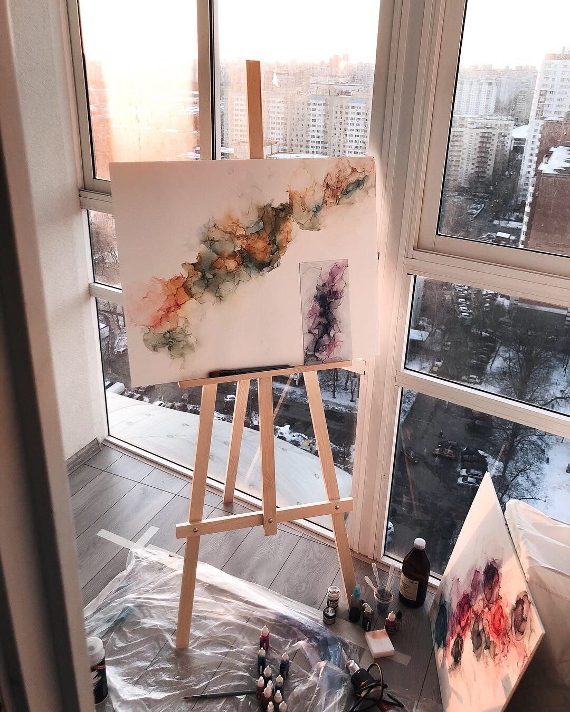

Рисование - искусство изображать на плоскости действительносуществующие или воображаемые предметы с обозначением их форм линиями иразличной степени освещения этих форм посредством более или менеесильного покрытия их каким-либо одноцветным веществом. Получаемое такимобразом, изображение называется рисунком, художник, производящий его -рисовальщиком..

Гитара – один из самых распространенных струнно-щипковых музыкальных народных инструментов. Игра на классической гитаре - это сложный вид исполнительской техники, требующий помимо высокой степени личностного развития, отлаженную работу психических процессов внимания, ощущений, восприятия музыки, творческого мышления, координационной памяти, музыкального воображения, а так же безупречную согласованность физических движений.